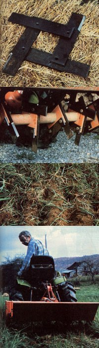

When of Bessie begins to give you sidelong, disapproving glances-and your field's resident groundhog packs up and moves-you know it's time to renovate that old sodbound pasture.
Unfortunately, an application of lime and fertilizer alone won't revive a badly depleted pasture. The turf really needs to be scored four to six inches deep, following the contour of the land. Once the subsurface network of choking, matted roots has been sliced apart and shredded, the ground beneath will be able to soak up air, moisture, and nutrients. Such thorough replenishing of the soil can be accomplished only by renovation ... a vital "maintenance" job that should be undertaken at least every four years (and preferably every two).
A HOMEMADE HARROW
Renovation, however, requires equipment, and the heavy disks or spring-tooth harrows that are normally used for the job are quite expensive. Besides, the high-priced implements are cumbersome tools that don't have many other practical uses on a small farmstead. There is an alternative, though, to purchasing such costly equipment: Many homesteaders own hand rototillers or tractor-mounted rotovators that can easily be adapted to do the same job as the harrow... at considerably less expense!
If your garden tiller has bolt-on tines, all you have to do to convert it for pasture use is fashion a set of straight blades (the same size as the curved ones), then attach them . . . and you'll be in business! I made my set of 24 tines to fit the Howard tractor-mount rotovator that I use for my vegetable crops during the growing season. Each cutter-measuring 9-1/2" X 2" X 5/16"-has a sharpened leading edge that can penetrate heavy soil to a depth of 5 to 5-1/2 inches.
You can build a similar set of replacement blades-and spend less than $15 on materials-using only a hacksaw, a hand drill, and a bench grinder. (Just follow the instructions in the diagram accompanying this article.)
TILLING TIPS
You'll find that the straight blades can chop deep furrows in the toughest sod, smooth out rough spots, and prepare the perfect seed base for reintroducing clover . . . at the same time that they're rejuvenating the existing cover. Then-when the harrowed field is treated to a follow-up application of lime and fertilizer-the indigenous grass will leap back to full vigor in just a few weeks, and actually produce four or five times the feed value it might previously have yielded!
You can renovate a pasture in either spring or fall, depending upon your purpose. If you want to revive old grasses-or if you're sowing red clover and lespedeza seed-you should till as early in the year as possible. On the other hand, plan to renovate only in late summer or early fall if you're trying to bring back a stand of clover (without reseeding), or if you're going to introduce alfalfa, crimson clover, and most other grasses. (Although you can spread the lime and fertilizer before or after tilling, I like to do it beforehand . . . allowing some of those nutrients to be incorporated into the soil by the spinning tines.)
Large seeded grasses (such as rye) do well if sown before the tilling process . . . legumes and small grass seeds germinate more easily if they're spread on the surface alter you've disturbed the turf.
HOW MANY PASSES?
One or two circuits of the field with your home-fashioned harrow-following the natural contours of the land-should break up the old roots enough to restore vigorous growth ... even though several grasses (such as Bermuda, Bahia, and sodbound fescue) may require additional passes. You'll find, too, that heavy loams and clays need more tilling than do sandy soils.
ADVANTAGES OF THE SYSTEM
A number of homesteaders seem to be somewhat disdainful of any dual-purpose equipment (such as the retrofit setup I've described here) and prefer-instead-to use separate tillage machinery for each operation. It is true that, using a three point hitch, it's easy to drop off a mower or tiller and hook on a new set of straight disks when you're ready for a day of pasture renovation. But changing the blades in your rotovator takes only about an hour every couple of years . . . and it gives you an opportunity to sharpen and service the standard tilling tines (a chore that's all too easy to forget when the blades are never removed from the machine). That bit of maintenance, in turn, benefits both you and your land .. . since sharp tines conserve fuel, reduce vibration, and do a far better job than do dull blades.
Another advantage of a "retrofitted" cultivator is its adaptability. The smaller machine can be maneuvered into a much tighter space than is possible with a fullsized harrow. If your farmland-like mine-is divided into several tightly enclosed pastures, you'll find that the larger implements are almost impossible to use without ensnaring fences, uprooting dwarf fruit trees, or even pulverizing a prize chicken or two.
The modified rotovator, by contrast, turns the soil right up to the fence line . . . even in corners! In fact, you can confidently back a straight-blade machine to within inches of a valued tree or shrub. And-while chickens are sometimes fatally confused by a trailing row of disks-my hens seem to be quite skilled at avoiding the more closely mounted, compact tiller.
The straight-tined tiller is also an efficient tool for working hay mulch and leaves into depleted garden soil each autumn. Straight blades won't allow the undecomposed remnants of hay to ball up and clog the machine (which is likely to happen when you're using a set of standard curved tines for the same task). The straight-edged diggers are also unsurpassed for breaking new garden area . .. in fact, just making four or five passes over your plot in the early spring is a guarantee that later tillage will go smoothly.
As a final bonus, straight blades are easily stored away (after having been given a good sharpening and oiling) on just a few inches of shelf space in the toolroom. . . . ready and waiting for use another year when-once again-you notice that faithful of Bessie is beginning to look at you reproachfully.
|
 Each harrow blade is usually a square arrangement made up to four long steel bars bolted together at right angles. (Click here for construction details.) A row of six blades can be rigged to fit almost any kind of cultivator or garden tiller. The sharpened leading edge on straight tines will chop deep, even furrows into worn-out sod... preparing a healthy seed base and rejuvenating the existing cover. A setup such as this - with square blades substituting for curved ones on a tractor-mounted rotovator - is compact and easy to maneuver into awkward spaces and corners. |
|
|